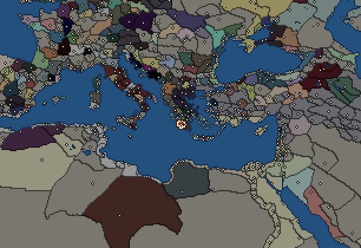
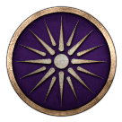
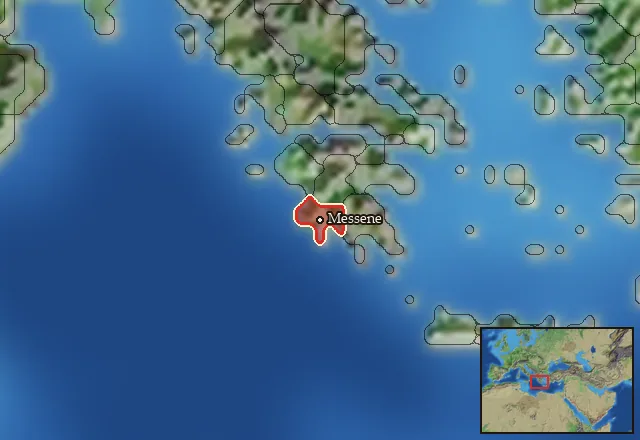

Messene

- Difficulty Very Difficult
- Greek culture
- Believes
 Dorian
Dorian - 1 settlement
- Capital Messene
- 7,000 manpower
- 3 characters
- 15 faction units
- 433 regional units
The campaign brief
Messenians, hear me! Our land is so green and fertile, and yet we used to work it for others. We were taught that our proper place was to grovel and serve. For centuries, we suffered the most degrading mistreatment by our Spartan neighbours, only because we dared to reject them as our overlords. The morale of other helots was further dampened by Sparta’s brutal suppression of us, causing them to turn a blind eye to their fellow helot brothers out of fear to suffer a similar fate…
We are the helots of Messene, forced to take part in many wars as Spartan slaves, and in return, we got nothing. Only a few of us were granted freedom by the Spartans, and even then, it was only to give us false hope. This false promise of freedom was given to a few of us, but only if we submitted. They kept us divided for far too long! They attempted to control our population, forcibly recruited our sons for their fights, and even made some of them Neodamodeis in the past. Many of you here still tremble when you hear the name of Sparta. I hope that you tremble from anger and not out of fear, because there is no more room for fear in my heart!
The Spartan illusion of strength was shattered by the great Epaminondas. He proved to everyone that the brave fight in the daylight and do not hide in the shadows like the Spartan Krypteia did and still does to this day. He left the bodies of Spartans on the battlefield for all their allies to see and marched towards the Peloponnese, where the Spartans were too terrified to face him. Spartans need us, but we do not need them! Despite their disciplined phalanx, their society has too many cracks of injustice that will eventually break before us, and then it is us who will burn Sparta to the ground!
The fire that burns inside every Messenian helot's heart should make Mount Etna's eruptions feel like a sunset. The Spartans are weakened now. They are few, and we are many, and thus they fear us. Many helots are spread all over Greece, like the stars in the night sky. If we march to Sparta right now, they will follow us. All Helots should live in their native lands and live in liberty! We will turn the Eurotas River red with Spartan blood, and rid Taygetos of the suppressing shadow of Sparta once and for all!
Starting diplomacy
Allied with (1): 
Trade agreements with (1): Antigonid Kingdom
At peace with every other faction.
Like every faction, it is also at war with the Free Peoples, who hold every settlement no faction does.
Starting settlements
Messene begins with 1 settlement and 7,000 manpower.
What is already built in each settlement
Messene, in Messenia: Governor's Villa, Small Stone Wall, Region Information Scroll, Roads, Local Barter, Olive Grove (Rural), Trade Port, Irrigation Ditches (Crops), Cisterns (Sanitation)
Homeland
Messene's homeland is 1 region. Only there can it install the Homeland government (more on homelands).

Starting characters
| Name | Role | Age | Name | Role | Age | Name | Role | Age | |||
|---|---|---|---|---|---|---|---|---|---|---|---|
| Damippos | General | 53 | Saitidas | General | 23 | Herakleitos | Admiral | 35 |
Reforms
For every faction: Military innovations have arrived!, Second wave of military innovations have arrived!.
Units you can recruit
The same as in the main campaign.